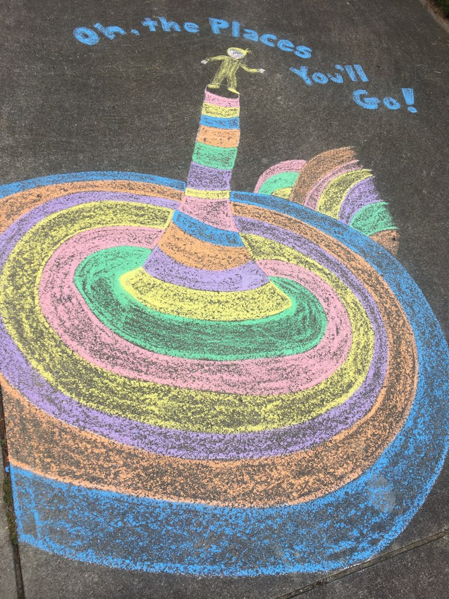
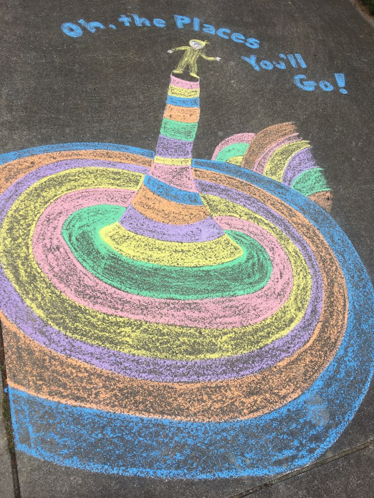
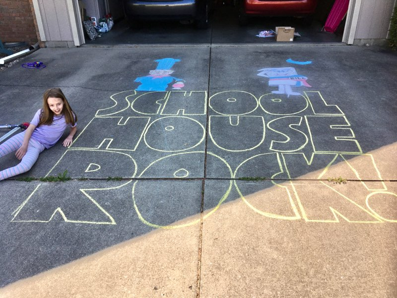
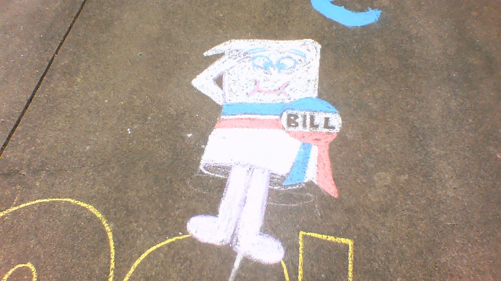
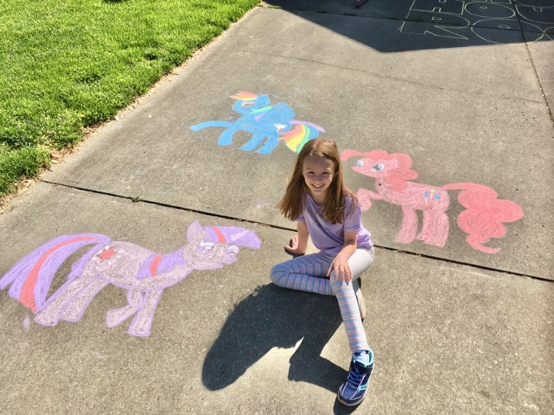
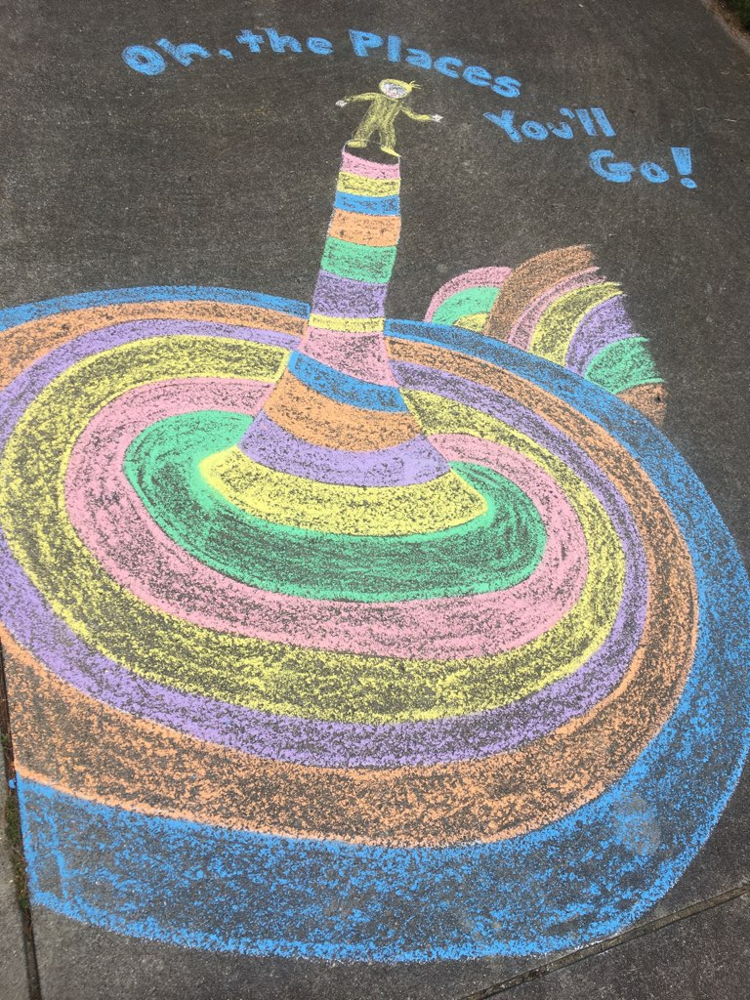

The chalk blog
We bought a big box of chalk in March to keep us occupied during COVID. I found that I really enjoyed it!

Emma was the one who figured out that brushing the chalk in would make it look smoother. (Compare the bottom of Bill, which was brushed, to the top, which wasn't brushed.)
I started off by copying pictures I found on the Internet and drawing things that might entertain people walking by the driveway. (Lots of kids in the neighborhood.)
 
I found characters to be much harder to draw than things that are more geometric.


I tried a few different techniques for a fourth of July display. The stars used a template that I cut from cardstock. The Statue of Liberty was my first small attempt at a 3-D look (coming out of the driveway)


This mosaic is perhaps my favorite of all the drawings so far. It was also one of the easiest. Just put down masking tape, and color in the sections. In the future I hope to make a GIANT one of these.

A few other fun ones (including one request)...


The flowers were another try at an anamorphic 3D effect. You can see it better by also looking at it upside-down. The flower must be stretched to appear to be upward.

I put a pool into our driveway!
This was a 3-D project that I had been planning for a while. There is an Aveeno chalk art ad doe by Julian Beever that I was using as the basis of the idea. I also did some planning on graph paper to get the 3-D distortion correct. It will make a fun math project next time I teach trig or geometry.

I started by measuring lots of things out and making small marks.


It really started to look 3-D as the stripes on the side of the pool were drawn.


Soon it was pretty much done, time to dip a foot in. I still have a lot to learn about shading, and need to get better at drawing characters before I can master making them 3D.


I added a 3-D ball for the dolphin to play with, and some water in front of it (and some hard to see shadows) to attempt to improve it. I used an actual beach ball, and marked where I saw it's outlines.